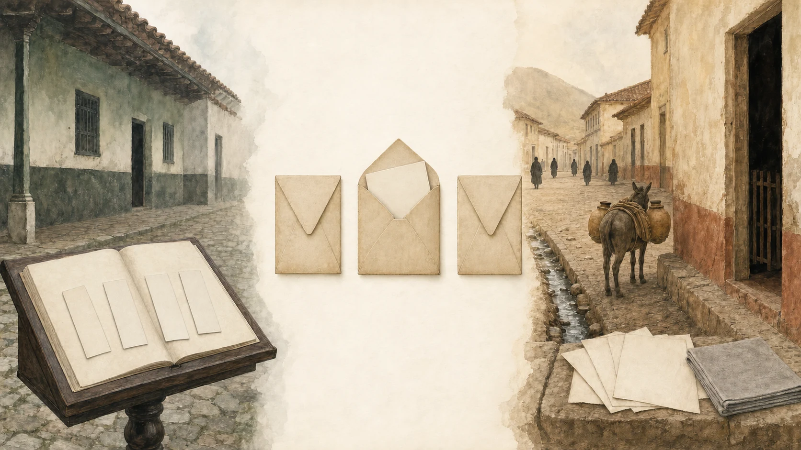

Tres sobres y una ciudad sin tranvía

El jueves 9 de febrero de 1865, un libro de Las Nieves recibió cuatro nombres de una sola vez: Tulia, Clementina, Ana y Mercedes.
Los cuatro cabían en una línea. Eso ya era una pequeña proeza.
La niña quedó anotada como Tulia Clementina Ana de las Mercedes Suárez Sánchez. A su alrededor aparecieron Manuel Suárez y Tulia Sánchez, sus padres; Joaquín Suárez y Cleofe Fortoul, los abuelos paternos; el general Francisco Santander y una abuela cuyo nombre quedó incompleto. También fueron nombrados dos padrinos, el doctor Antonio Vargas y Clementina Santander.
Una entrada bastante concurrida para una recién nacida.
Afuera estaba Las Nieves, una parroquia al norte del centro antiguo de Bogotá. Su plaza llevaba siglos recibiendo pasos, ventas, encuentros y barro. El atrio de piedra era más viejo que todos los presentes aquel jueves. Cerca de allí ya no estaba el antiguo panteón que había desaparecido a comienzos del siglo. La ciudad cambiaba, pero el libro seguía haciendo una tarea sencilla y enorme: guardar nombres.
No conocemos la hora del bautismo ni quién llevó a la niña. Tampoco sabemos si llovió, si la plaza estaba llena o si alguien llegó tarde. La página no conserva esas cosas. Conserva una familia alrededor de un nombre muy largo y un espacio que nadie debería completar por capricho.
Años después apareció un problema más difícil que hacer caber cuatro nombres en un renglón: había tres hermanas, y sus vidas empezaron a confundirse.
Tres sobres
Imaginemos tres sobres sobre una mesa.
El primero dice Tulia. El segundo, Sixta. El tercero, Clementina.
No hace falta unirlos con flechas. Sabemos que una historia familiar publicada mucho después las distinguió como hermanas. También sabemos que, cuando eran niñas, quedaron huérfanas y fueron acogidas por Diego Suárez Fortoul y la señora Lacroix de Suárez. Durante largo tiempo tuvieron además un tutor al que la noticia llamó solamente don Roberto.
Eso es mucho y es poco.
Es mucho porque la casa de crianza tuvo adultos concretos. Diego no aparece solo: la señora Lacroix de Suárez también ocupó un lugar en el cuidado de las tres. Don Roberto tuvo una responsabilidad que duró años.
Es poco porque no conocemos la dirección de aquella casa, sus cuartos ni sus reglas. No sabemos si las hermanas compartieron dormitorio, libros o juegos. Ni siquiera podemos decir cuál era la más habladora. Inventarles una infancia dulce y perfectamente iluminada sería muy fácil. También sería quitarles la vida real para ponerles una de utilería.
Los sobres sirven mejor.
El de Sixta guarda un papel propio. Allí aparece como Sixta Suárez Santander, hija de Manuel Suárez y Sixta Tulia Santander, viuda de Luis Fonnegra. Ese papel pertenece a ella. Durante un tiempo quedó arrimado a otra mujer de nombre parecido, como si una hija y su madre pudieran turnarse la misma vida.
El sobre de Clementina tiene menos. Una publicación la separa de sus hermanas, pero no deja una escena suya capaz de sostener estas páginas. Cerrarlo no significa que Clementina no tuviera historia. Significa que no vamos a fabricársela para emparejar el capítulo.
El sobre de Tulia conduce a una mañana de 1883.
La ciudad que todavía andaba a pie
Bogotá no tenía tranvía cuando Tulia Suárez Santander se casó con Enrique Umaña Santamaría.
Faltaban catorce meses para que el primer tranvía de mulas comenzara a correr hacia Chapinero. El 15 de octubre de 1883, la capital se recorría sobre todo a pie. Los caños abiertos volvían incómodo el paso de los coches. Por las calles avanzaban burros cargados con agua, leña, carbón o ladrillos; también había cargadores, carros de dos ruedas y alguna silla de manos.
Las puertas todavía no llevaban cada una su propio número. Para encontrar un lugar servían las iglesias, las esquinas y los nombres antiguos de las calles. Una dirección podía sonar más a acertijo que a las placas de hoy.
Esa mañana, la ciudad se habría despertado poco después de las seis. En muchas casas era costumbre empezar con chocolate, y el almuerzo llegaba hacia las diez o diez y media. La boda de las nueve quedó justo en medio. No sabemos qué comieron Tulia y Enrique, así que el chocolate se queda en los mostradores de la ciudad y no entra a escondidas en su desayuno.
Tampoco sabemos cómo llegaron a La Enseñanza. A pie era posible. También existían otros transportes. Ninguno quedó escrito junto a sus nombres.
Lo que sí sabemos es la hora: las nueve de la mañana.
A las nueve, en La Enseñanza
La iglesia de La Enseñanza tenía una sola nave. Unas rejas de madera separaban los coros, y seguirían allí hasta las reformas de 1897. La antigua comunidad religiosa ya no funcionaba en el lugar, y las aulas de Bellas Artes pertenecían al futuro. En la mañana de Tulia no hay que poner monjas, alumnas, caballetes ni un edificio remodelado años después.
Dentro de ese espacio se casaron Tulia y Enrique.
La noticia de la boda hizo algo inesperado: convirtió un poema en parte del acontecimiento. José Antonio Soffia, ministro de Chile y poeta, escribió un epitalamio, que es un poema compuesto para celebrar un matrimonio. José María Quijano Wallis, quien había ocupado la Secretaría de Relaciones Exteriores, lo leyó.
El episodio reunió a la Iglesia, la diplomacia, la poesía y la imprenta. Suena como una multitud de instituciones para una mañana de lunes, aunque el centro seguía siendo una pareja.
No conocemos los versos. Tampoco sabemos por qué Soffia escribió el poema ni cómo llegó a manos de Quijano. No hace falta inventarlos. Basta la imagen de unas hojas pasando a una voz pública en una iglesia de madera, yeso y rejas.
Trece días después, el Papel Periódico Ilustrado contó la boda. Nombró al novio, a la novia, al autor del poema, a quien lo leyó y a las personas que habían criado a Tulia. Incluso recordó a don Roberto, el tutor sin apellido.
Pero no nombró a los padres de la novia.
La imprenta podía guardar mucho y dejar un hueco exactamente donde uno esperaba una respuesta.
La niña del nombre largo
Entre el libro de Las Nieves y la boda habían pasado dieciocho años.
La niña de 1865 se llamaba Tulia Clementina Ana de las Mercedes Suárez Sánchez. La novia de 1883 era Tulia Suárez Santander. Los nombres, las edades posibles y la red familiar las acercan con fuerza. Todo apunta a la misma mujer.
Aun así, las dos páginas no encajan como mitades cortadas con tijera. En la primera aparece Sánchez. En la segunda, Santander. El nombre incompleto de una abuela tampoco puede rellenarse sólo porque otra versión resulte tentadora.
Así trabajan los nombres de familia: unas veces se alargan, otras se encogen y a veces cambian justo cuando uno esperaba que se portaran bien. No es una rareza exclusiva del siglo XIX. Basta preguntar en cualquier casa cuántas personas usan siempre todos sus nombres.
Tulia puede avanzar desde Las Nieves hasta La Enseñanza, pero lleva consigo esa pequeña diferencia. Contarla no debilita su historia. La vuelve más honesta.
Lo que no podemos hacer es usar a Sixta para rellenarla, ni meter a Clementina en el espacio que falta.
Una casa que no se deja dibujar
La crónica de la boda recordó que Tulia era una de tres sobrinas huérfanas criadas por Diego Suárez Fortoul y la señora Lacroix de Suárez.
Allí está la parte más humana y más callada del relato. Tres niñas perdieron a sus padres. Otros adultos abrieron un lugar para ellas. Años después, cuando una de las tres se casó, el periódico todavía consideró importante contar quiénes las habían criado.
No sabemos cómo era esa convivencia. Las palabras "acogidas desde niñas" no traen una mesa, un patio ni una conversación. No dicen si la casa era ruidosa, estricta, alegre o enorme. La memoria pública recordó el cuidado, pero no su forma diaria.
Por eso la ilustración no muestra la casa. Muestra tres sobres.
Uno se abre hacia una boda y un poema. Otro guarda un permiso con el nombre de Sixta. El tercero permanece cerrado para Clementina. Ninguno está vacío, aunque desde fuera no podamos ver todo lo que contiene.
Tulia siguió su vida junto a Enrique Umaña Santamaría. Mucho después, esa rama llegaría hasta los Vargas Umaña, hasta Enrique Vargas Umaña y, por él, a Lula. Ese camino merece su propio espacio y todavía conserva puertas sin abrir. Aquí basta con regresar a las hermanas.
Durante demasiado tiempo, nombres parecidos permitieron que una vida se apoyara sobre otra. Ahora los tres sobres vuelven a estar separados.
En el de Tulia quedan cuatro nombres, una plaza antigua, una iglesia de una nave y unas hojas de poema. En el de Sixta, un papel que por fin le pertenece. En el de Clementina, una puerta cerrada que no vamos a derribar con imaginación.
La ciudad tardaría catorce meses en estrenar su tranvía. Las hermanas tardaron mucho más en recuperar cada una su lugar en la página.